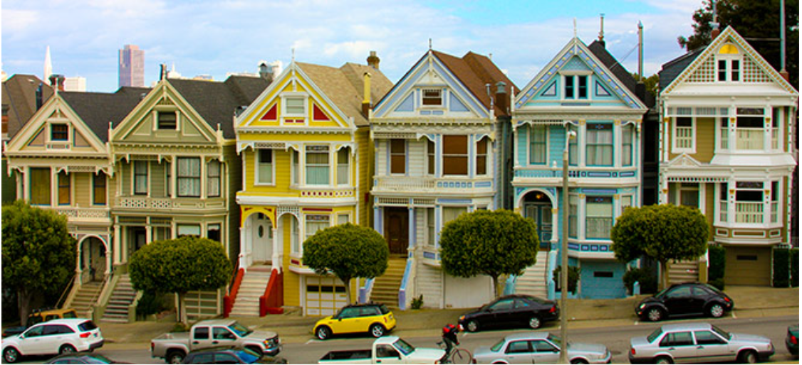

Data Cleaning project using
SQL
This beginner friendly project is about cleaning data in MySQL Database. Data Cleaning is a super underrated skill
in the Data community,but contrastingly It's the stepping stone foe any visual creation. I hope this project will fulfil the understanding of cleaning using basic clauses (char,charindex etc)

This project revolves or rather helps in exploring the adversities of COVID 19 pandemic on the continents of the world and populates the deaths,rolling vaccinations and vaccinations.Necessary CTE and joins have been used to arrive at the insights to get to know the effects.
Kickstarter is an American public benefit corporation based in New York, that maintains a global crowdfunding platform focused on creativity.People who back Kickstarter projects are offered rewards or experiences in exchange for their pledges. This model traces its roots to subscription model of arts patronage, in which artists would go directly to their audiences to fund their work.
The Olist Store Analysis project aims to analyze customer purchasing patterns and payment statistics on an E-commerce platform, Olist. This project covers several key performance indicators (KPIs) such as weekday vs weekend sales, payment statistics, delivery time, and customer behavior.The data is cleaned by removing outliers if any to extract valuable insights.
Atliq Grands is an hospitality offering Co. which is facing revenues surge in the current time in different cities,As a data analyst intern in that company, I have got a task to find out the areas to improve and provide withe the insights to Team of the stakeholders.
This project is regarding analysis of sales and the customers of a particular store using the concept "RFM analysis" which is the abbreviation of Recency,Frequency,Monetory Value. Recency means How often the customer has visted their store. This helps the store to analyse their new and old cutomers. Now,Frquency means the No of times the customer has visited in a particular period of time. Lastly,Monetory value means, what was the revenue generated by a particular customer.
These all factors will be enough to sneak peek into their database to have an account for their sales and revenue.
This is the guided project for Youtube channel analysis using Youtube API key from google developer console website ,from where we are going to create the API key (youtube API V3) and get the channel ids from the rwspective channels of youtubers. After that, we would beusing the API key for youtube to provide us the channel details of the above mentioned youtube channels. I would like to extend my regards to the popular Youtuber TechTFQ for the guidance to complete this project.
T20 World cup analysis by
web scraping
This data analysis project is about building a Report using BI and it's workspace for the best playing XI from the recently concluded T20 WC 2022 . before doing that, the data is scrapped from popular website "espncricinfo" and then scrapped using Brightdata website then converted into json file ,eventually uploaded into power BI.